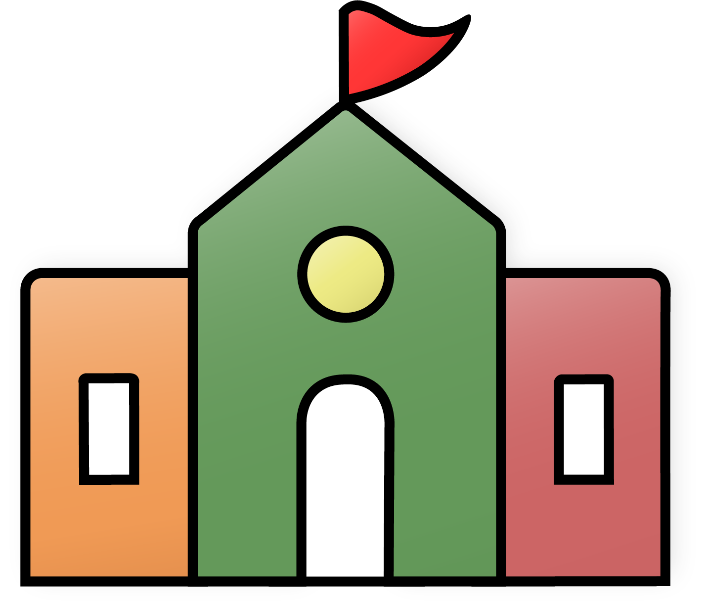
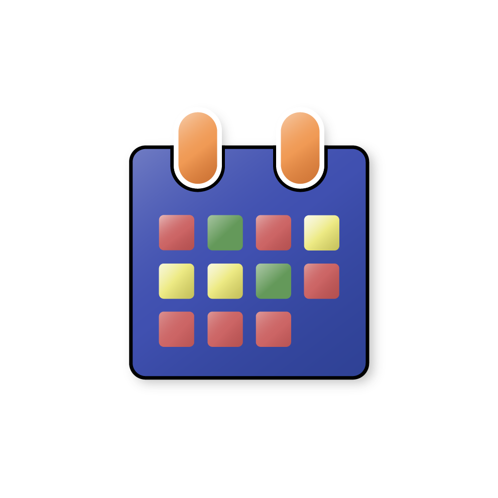

<div [class.is-mobile]="mobileQuery.matches">
  <!-- TOOLBAR -->
  <mat-toolbar color="primary" class="toolbar">
    <div class="topBarL">
      <button mat-icon-button (click)="snav.toggle()">
        <mat-icon>menu</mat-icon>
      </button>

      <mat-select placeholder="My School" id="schools" name="schoollist">
        <ng-container *ngFor="let school of schoolList">
          <mat-option value="{{ school }}">{{ school }} </mat-option>
        </ng-container>
      </mat-select>
    </div>

    <div class="topBarM">
      <a routerLink="/">
        
      </a>
    </div>

    <div class="topBarR">
      <form id="lgForm" (ngSubmit)="topSearch()">
        <input
          type="search"
          placeholder="Search..."
          [formControl]="topSearchInput"
        />
        
        <button
          id="lgSubmitButton"
          type="submit"
          [disabled]="!this.topSearchInput.valid"
        ></button>
      </form>
      <!-- <button id="smSearchButton">
        
      </button> -->

      <a id="loginLink" routerLink="/account">
        <div id="login">
          <ng-container *ngIf="isLoggedIn && !loading">
            <h2>Hello {{ me.firstName }}</h2>
            
          </ng-container>
          <ng-container *ngIf="!isLoggedIn">
            <h2>Login</h2>
          </ng-container>
        </div>

        <div *ngIf="!isLoggedIn">
          
        </div>
      </a>
      <div id="logoMobile">
        <a routerLink="/">
          
        </a>
      </div>
    </div>
  </mat-toolbar>

  <mat-sidenav-container
    class="sidenav-container"
    [style.marginTop.px]="mobileQuery.matches ? 56 : 0"
  >
    <!-- FLY OUT MENU -->
    <mat-sidenav
      #snav
      [mode]="mobileQuery.matches ? 'over' : 'side'"
      [fixedInViewport]="mobileQuery.matches"
      fixedTopGap="56"
    >
      <mat-nav-list>
        <div class="nav">
          <div class="vertical-nav">
            <a
              routerLink="/posts"
              (click)="mobileQuery.matches && snav.toggle()"
            >
              <div class="navTab">
                
                <h1>ANNOUNCEMENTS</h1>
              </div>
            </a>

            <a
              routerLink="/calendar"
              (click)="mobileQuery.matches && snav.toggle()"
            >
              <div class="navTab">
                
                <h1>EVENT CALENDAR</h1>
              </div>
            </a>

            <a
              routerLink="/departments"
              (click)="mobileQuery.matches && snav.toggle()"
            >
              <div class="navTab">
                
                <h1>DEPARTMENTS</h1>
              </div>
            </a>

            <a
              routerLink="/faculty"
              (click)="mobileQuery.matches && snav.toggle()"
            >
              <div class="navTab">
                
                <h1>FACULTY</h1>
              </div>
            </a>

            <!-- <a routerLink="/my-school" (click)="mobileQuery.matches && snav.toggle()"> -->
            <div class="navTab">
              
              <h1>MY SCHOOL</h1>
            </div>
            <!-- </a> -->
          </div>
        </div>
      </mat-nav-list>
    </mat-sidenav>

    <!-- MOBILE SEARCH -->
    <mat-sidenav-content>
      <!-- Small screen search bar -->
      <div id="smSearchBar">
        <form id="smForm" (ngSubmit)="topSearch()">
          <input
            type="search"
            placeholder="Search..."
            [formControl]="topSearchInput"
          />
          <button id="smSubmitButton" type="submit">
            
          </button>
        </form>
      </div>

      <router-outlet (activate)="onActivate($event)"></router-outlet>
    </mat-sidenav-content>
  </mat-sidenav-container>
</div>
